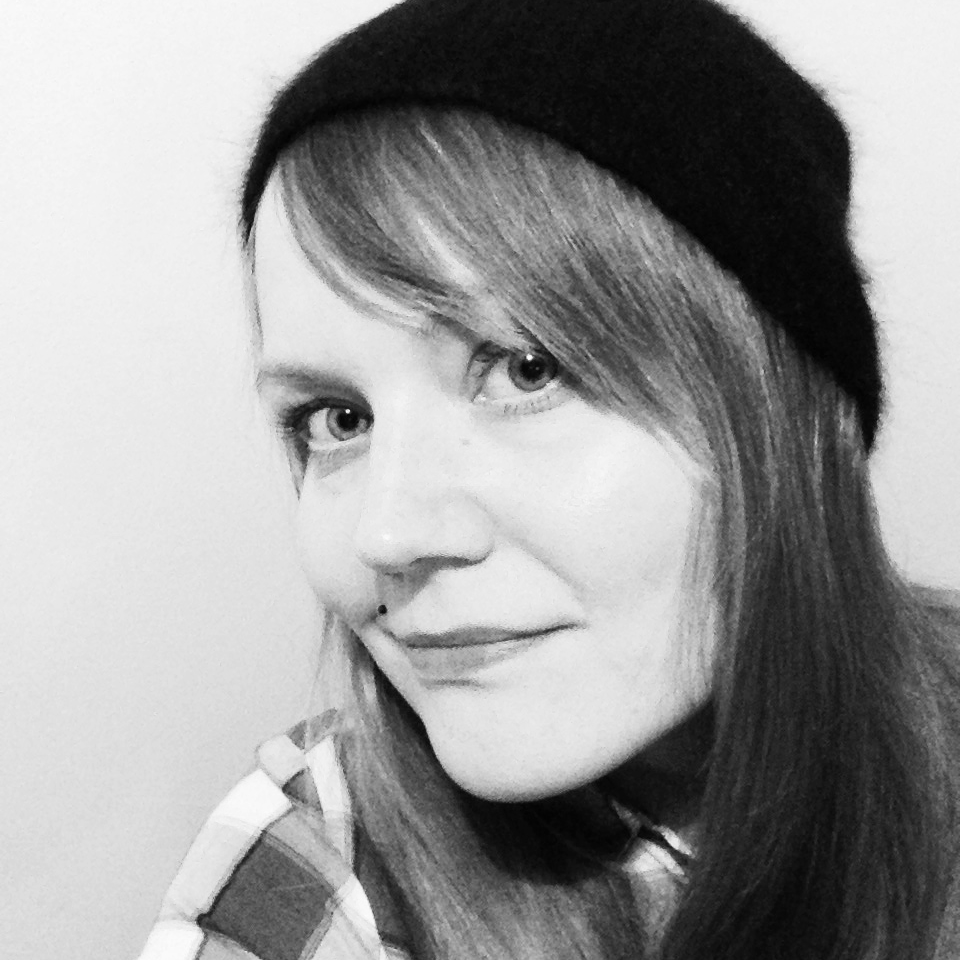

About me
As a designer I’m more practical and rational than a great visionary. I’m quite inquisitive and open minded person, who’s eager to test latest methods and learn new techniques. I want to bring intuitively working and elegant experiences to people. Designing is not magic, but when you work hard and collaborate with other skilful people, the results can be magical.
Who am I as a person
I’m originally from South Carelia of Finland. I was born in 1981 in a small town called Joutseno. Thanks to my Carelian roots I have good sense of humor, at least my own opinion. I laugh a lot and speak out what’s on my mind. I love eating good food and I enjoy cooking myself.
I like to set aims to myself also in personal life. One of those is my running hobby. I’ve been training running since last spring and going to participate some half marathon competition next summer.
I like outdoor activities and nature. I love animals. Specially dogs and horses. I own a Miniature Bull Terrier.
Contact
- milla.moisio@gmail.com
- linkedin.com/in/millamoisio
- twitter.com/milderi
- facebook.com/millaemoisio
- github.com/milderi